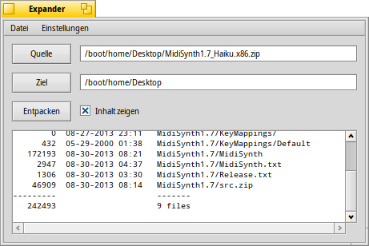
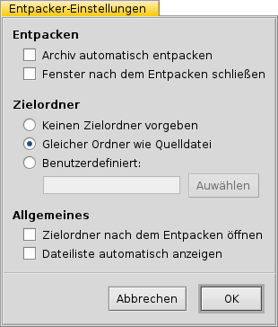

Deutsch
Deutsch Français
Français Italiano
Italiano Русский
Русский Español
Español Svenska
Svenska 日本語
日本語 Українська
Українська 中文 ［中文］
中文 ［中文］ Português
Português Suomi
Suomi Slovenčina
Slovenčina English
English Entpacker
Entpacker
| Deskbar: | Keine Verknüpfung; Entpacker wird durch Doppelklick auf eine gepackte Datei gestartet. | |
| Ort: | /boot/System/apps/Entpacker | |
| Einstellungen: | ~/Konfiguration/settings/Expander_Settings |
Mit dem Entpacker lassen sich schnell und einfach die gebräuchlichsten Archive entpacken, darunter ZIP, GZIP, BZIP2, RAR und TAR.
Ein Doppelklick auf ein Archiv öffnet den Entpacker:

| ALT S | öffnet einen Dialog zur Auswahl eines Archivs | |
| ALT D | öffnet einen Dialog, um zu bestimmen wohin entpackt werden soll | |
| ALT E | startet das Entpacken; kann mit ALT K abgebrochen werden |
Der Inhalt des Archivs lässt sich mit Inhalt anzeigen oder ALT L anzeigen und verbergen.
Entpacker kann lediglich ganze Archive entpacken.
Nur einzelne Dateien eines Archivs auspacken, beziehungsweise Dateien entfernen oder hinzufügen, ist nicht möglich.
Nur einzelne Dateien eines Archivs auspacken, beziehungsweise Dateien entfernen oder hinzufügen, ist nicht möglich.
Über oder ALT P gelangt man zu den Einstellungen von Entpacker.
Die Optionen sind selbsterklärend:
